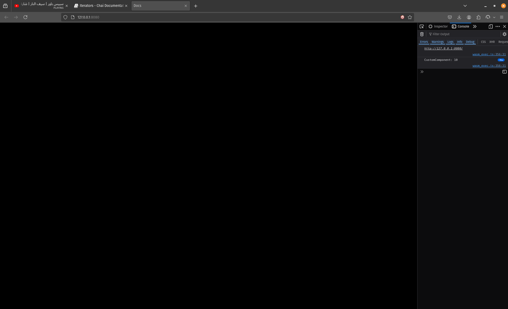

Iterators
Iteratos are a way provided by the ECS Engine to iterate over Entities that have X Component attached to it.
Let's say you created a new Entity and attached a Rigidbody Component to it. Now in Update you want to apply continuos force to that Rigidbody. How would you go about that? Would you need to get that Component's Pointer every-frame? That seems like a lot of processing overhead.
And here comes the usefulness of ECS Iterators.
Check this Example.
type CustomComponent struct {
data int
}
func IterateStartSystem(_this_scene *chai.Scene) {
_this_scene.NewUpdateSystem(RectUpdateSystem)
_entity := _this_scene.NewEntityId()
_custom_component := CustomComponent{data: 10}
_this_scene.AddComponents(_entity, chai.ToComponent(_custom_component))
}
func IterateUpdateSystem(_this_scene *chai.Scene, _delta float32) {
chai.Iterate1[CustomComponent](func(i ecs.Id, c *CustomComponent){
chai.LogF("CustomComponent: %v", c.data)
})
}
var app chai.App = chai.App{
Title: "Docs",
Width: 480,
Height: 480,
OnStart: func() {
_test_scene := chai.NewScene()
_test_scene.NewStartSystem(IterateStartSystem)
// Transition into this scene
chai.ChangeScene(&_test_scene)
},
}
func main(){
chai.Run(&app)
}
output

We need to explain a few statements in the previous example.
We can see the usual of subsribing a Start runtime function and an Update runtime function, and then we create a new Entity and attach a custom component. In "IterateUpdateSystem" we see that we're calling a new function "Iterat1" that takes a generic of type [CustomComponent] and as a parameter it takes a function that needs 2 parameters, 1st is an Entity id, and 2nd is a pointer to "CustomComponent".
What Iterate1[CustomComponent] does is it iterates on all entities with a CustomComponent type Component attached to it and then it executes the callback provided in it as a parameter:
Iterate[CustomComponent](A Function that does something with the Entity)
and the callback function provides 2 parameters, 1st is the Entity that has CustomComponent attached and 2nd is a pointer to the CustomComponent attached to it.
You don't have to use a closure function, You can provide an external function that takes the same parameters as the closure does
Multiple Components?
You can iterate over Entities with more than 1 Component using
chai.Iterate2[A, B](func(i ecs.Id, a *A, b *B))
chai.Iterate3[A, B, C](func(i ecs.Id, a *A, b *B, c *C))
chai.Iterate4[A, B, C, D](func(i ecs.Id, a *A, b *B, c *C, d *D))
chai.Iterate4[A, B, C, D, E](func(i ecs.Id, a *A, b *B, c *C, d *D, e *E))
You can use any of the previous functions to iterate over entities that contain the provided components inside the brackets "[]".
chai.Iterate1[A], Iterates over all Entities who have this Component attached to them and not Entities who only have this Component attached to them, the other Iterate functions work the same way.
Example
Let's use what we learned so far to create an App that draws 3 rects.
type CustomComponent struct {
xOffset float32
}
func RectStartSystem(_this_scene *chai.Scene) {
_this_scene.NewRenderSystem(RectRenderSystem)
chai.Shapes.LineWidth = 1.5
_entity1 := _this_scene.NewEntityId()
_custom_component1 := CustomComponent{xOffset: 120}
_this_scene.AddComponents(_entity1, chai.ToComponent(_custom_component1))
_entity2 := _this_scene.NewEntityId()
_custom_component2 := CustomComponent{xOffset: 0}
_this_scene.AddComponents(_entity2, chai.ToComponent(_custom_component2))
_entity3 := _this_scene.NewEntityId()
_custom_component3 := CustomComponent{xOffset: -120}
_this_scene.AddComponents(_entity3, chai.ToComponent(_custom_component3))
}
func RectRenderSystem(_this_scene *chai.Scene, _delta float32) {
chai.Iterate1[CustomComponent](func(i ecs.Id, c *CustomComponent){
chai.Shapes.DrawRectRotated(chai.NewVector2f(c.xOffset, 0.0), 0.0, chai.NewVector2f(20.0, 20.0), chai.WHITE, 0.0)
})
}
var app chai.App = chai.App{
Title: "Docs",
Width: 480,
Height: 480,
OnStart: func() {
_test_scene := chai.NewScene()
_test_scene.NewStartSystem(RectStartSystem)
// Transition into this scene
chai.ChangeScene(&_test_scene)
},
}
func main(){
chai.Run(&app)
}
output